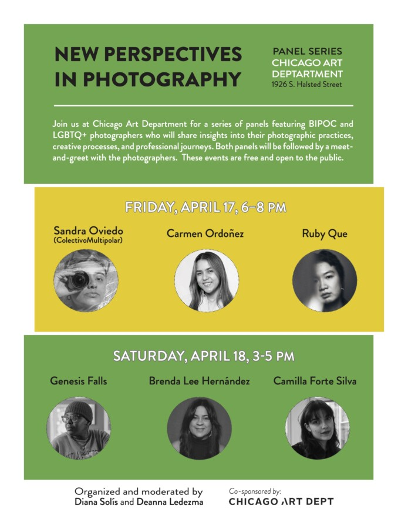

New Perspectives in Photography: Two-day Photography Panel Series
Co-organized and moderated by photographer Diana Solís and photo historian Deanna Ledezma, the panel will bring together BIPOC and LGBTQ+ photographers for a public conversation about their creative practices, experiences in the field, and the perspectives they bring to contemporary image-making. This two-day gathering highlights the work and voices of BIPOC and LGBTQ+ photographers whose practices contribute to expanding the visual and cultural narratives of contemporary photography.